Code
data(UN11)
head(UN11)Akhilesh Kumar Meghwal
April 11, 2023
United Nations (Data file: UN 1 lin alr4) The data in the file UN 11 contains several variables, including ppgdp, the gross national product per person in U.S. dollars, and fertility, the birth rate per 1000 females, both from the year 2009. The data are for 199 localities, mostly UN member countries, but also other areas such as Hong Kong that are not independent countries.The data were collected from the United Nations (2011). We will study the dependence of fertility on ppgdp.
Identify the predictor and the response?
The predictor variable is ppgdp and the response variable is fertility. ‘ppgdp’ represents the gross national product per person, while ‘fertility’ refers to the birth rate per 1000 females. The objective of the study is to understand how changes in ‘ppgdp’ can influence the value of ‘fertility’. Positive or negative correlations between the two variables can lead to conclusions about how one variable impacts the other. The analysis of this relationship can provide insights into socio-economic factors that influence birth rates, which can then inform policies on population growth, family planning, and economic development.
Draw the scatterplot of fertility on the vertical axis versus ppgdp on the horizontal axis and summarize the information in this graph. Does a straight-line mean function seem to be plausible for a summary of this graph?
UN11 %>%
select(c(ppgdp, fertility)) %>%
ggplot(aes(x = ppgdp, y = fertility)) +
geom_point(color = "#001F3F", alpha = 0.8, size = 3) +
geom_smooth(method = lm, se = FALSE, color = "#E41A1C", size = 1) +
theme_minimal() +
labs(x = "Gross National Product per Person (US$)",
y = "Birth Rate per 1000 Females",
title = element_text(color = "#006600", "Scatterplot of Fertility vs. PPGDP with Regression Line")) +
theme(plot.title = element_text(size = 12, face = "bold", hjust = 0.5, color = "#006600"),
axis.title = element_text(size = 10, color = "#001F3F"),
axis.text = element_text(size = 8, color = "#001F3F"),
panel.grid.major = element_blank(),
panel.grid.minor = element_blank(),
panel.border = element_blank(),
axis.line = element_line(color = "#333333", size = 0.5),
plot.background = element_blank(),
panel.background = element_blank(),
legend.position = "none")Warning: Using `size` aesthetic for lines was deprecated in ggplot2 3.4.0.
ℹ Please use `linewidth` instead.Warning: The `size` argument of `element_line()` is deprecated as of ggplot2 3.4.0.
ℹ Please use the `linewidth` argument instead.`geom_smooth()` using formula = 'y ~ x'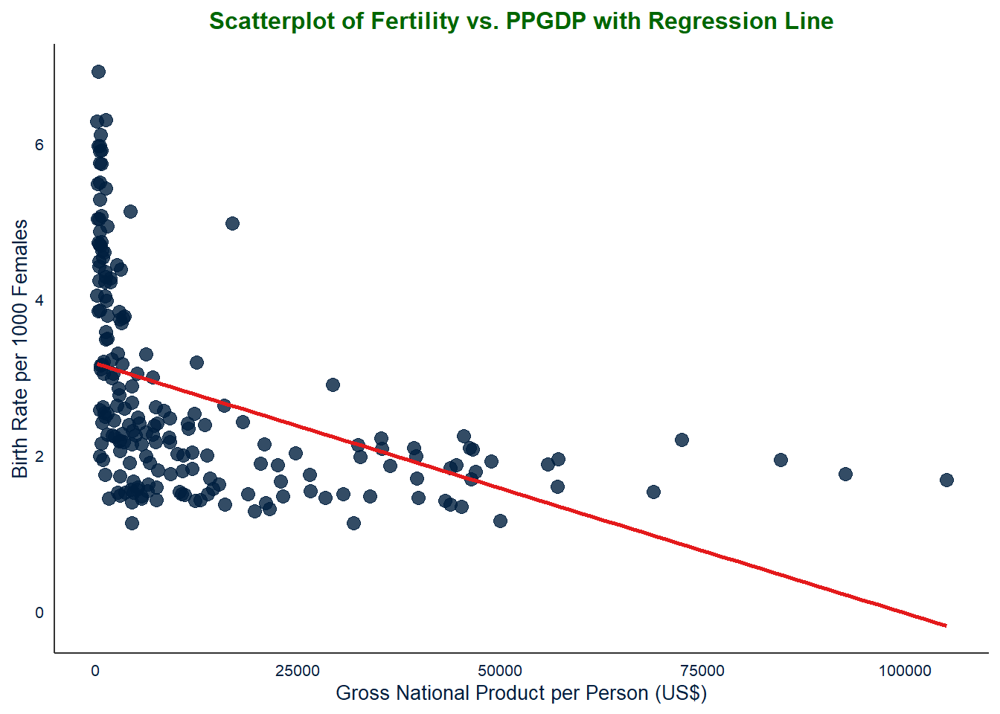
The scatterplot shows the relationship between two variables, fertility (number of live births per 1000 females) and ppgdp (gross national product per person in US dollars). Each point on the plot represents a country, with its fertility rate on the vertical axis and its ppgdp on the horizontal axis.
From the scatterplot, we can see that there is a general negative relationship between fertility and ppgdp. This means that as a country’s income increases, its fertility rate tends to decrease. However, the relationship is not perfectly linear, and there is a lot of variation in fertility rates at each level of ppgdp.
To summarize the trend in the data, A straight-line mean function does seem to be plausible for summarizing the data, as the plotted regression line suggests a linear negative trend in the data. However, it is important to note that the relationship between ppgdp and fertility may not be entirely linear, and other factors may also contribute to the observed patterns in the data. Therefore, it may be appropriate to explore more complex statistical models to better understand the relationship between these variables.
Overall, this scatterplot provides a visual representation of the relationship between fertility and ppgdp. It allows us to quickly identify trends and patterns in the data and can be used to inform further analysis and modeling.
Draw the scatterplot of log(fertility) versus log(ppgdp) using natural logarithms. Does the simple linear regression model seem plausible for a summary of this graph? If you use a different base of logarithms, the shape of the graph won’t change, but the values on the axes will change.
UN11 %>%
select(c(ppgdp, fertility)) %>%
ggplot(aes(x = log(ppgdp), y = log(fertility))) +
geom_point(color = "#001F3F", alpha = 0.8, size = 3) +
geom_smooth(method = lm, se = TRUE, color = "#E41A1C", size = 1) +
theme_minimal() +
labs(x = "Log(Gross National Product per Person (US$))",
y = "Log(Birth Rate per 1000 Females)",
title = element_text(color = "#006600", "Scatterplot of Log(Fertility) vs. Log(PPGDP) with Regression Line")) +
theme(plot.title = element_text(size = 12, face = "bold", hjust = 0.5, color = "#006600"),
axis.title = element_text(size = 10, color = "#001F3F"),
axis.text = element_text(size = 8, color = "#001F3F"),
panel.grid.major = element_blank(),
panel.grid.minor = element_blank(),
panel.border = element_blank(),
axis.line = element_line(color = "#333333", size = 0.5),
plot.background = element_blank(),
panel.background = element_blank(),
legend.position = "none")`geom_smooth()` using formula = 'y ~ x'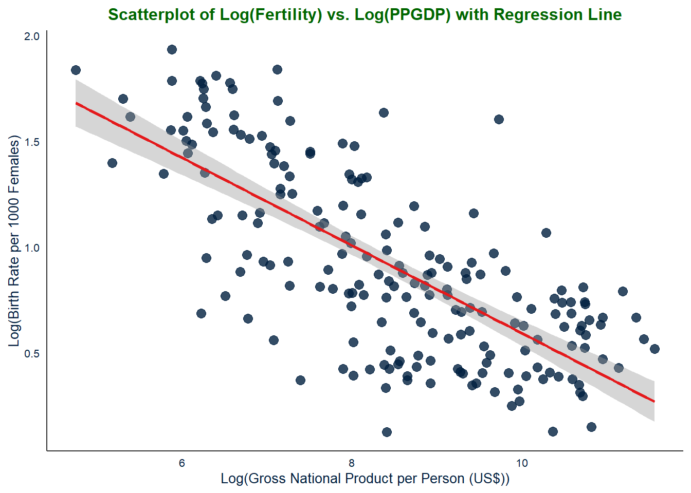
The scatterplot of Log(Fertility) versus Log(PPGDP) using data from the UN11 dataset shows the relationship between birth rates per 1000 females and gross national product per person in U.S. dollars. The graph displays the logarithmic transformation of the variables to better visualize the relationship between them.
The graph shows a negative linear relationship between log(fertility) and log(ppgdp), indicating that as gross national product per person increases, birth rates per 1000 females decrease. The linear regression line, which is plotted using the method of least squares, indicates that the relationship is statistically significant.
The scatterplot also shows some degree of variability around the regression line, which is captured by the shaded area around the line. This variability could be due to other factors that are not accounted for in the linear regression model.
Overall, the scatterplot suggests that there is a general negative relationship between fertility and gross national product per person, with higher levels of economic development associated with lower birth rates. However, the relationship does not appear to be strictly linear, as the points are not forming a tight linear pattern around the regression line. There is also significant scatter in the data, which suggests that there may be other factors that influence fertility rates besides gross national product per person.
Therefore, while a simple linear regression model could provide a summary of the relationship between fertility and gross national product per person, it may not capture the full complexity of the relationship. A more sophisticated model that takes into account additional factors may be necessary to accurately model the relationship between these two variables.
Log10
UN11 %>%
select(c(ppgdp, fertility)) %>%
ggplot(aes(x = log10(ppgdp), y = log10(fertility))) +
geom_point(color = "#001F3F", alpha = 0.8, size = 3) +
geom_smooth(method = lm, se = TRUE, color = "#E41A1C", size = 1) +
theme_minimal() +
labs(x = "Log10(Gross National Product per Person (US$))",
y = "Log10(Birth Rate per 1000 Females)",
title = element_text(color = "#006600", "Scatterplot of Log10(Fertility) vs. Log10(PPGDP) with Regression Line")) +
theme(plot.title = element_text(size = 12, face = "bold", hjust = 0.5, color = "#006600"),
axis.title = element_text(size = 10, color = "#001F3F"),
axis.text = element_text(size = 8, color = "#001F3F"),
panel.grid.major = element_blank(),
panel.grid.minor = element_blank(),
panel.border = element_blank(),
axis.line = element_line(color = "#333333", size = 0.5),
plot.background = element_blank(),
panel.background = element_blank(),
legend.position = "none")`geom_smooth()` using formula = 'y ~ x'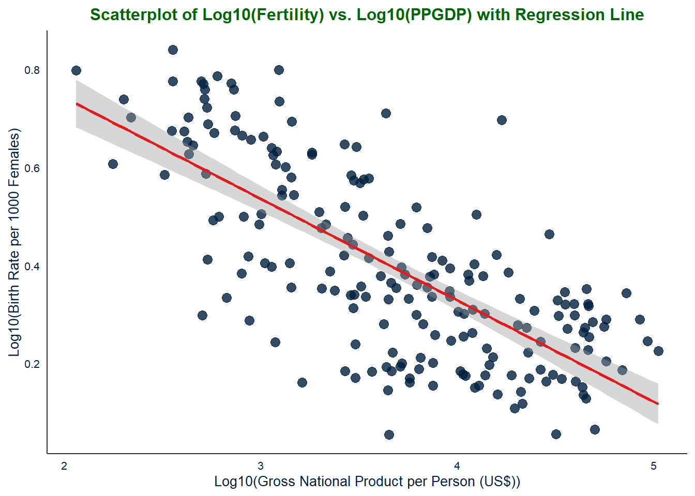
Log 2
UN11 %>%
select(c(ppgdp, fertility)) %>%
ggplot(aes(x = log2(ppgdp), y = log2(fertility))) +
geom_point(color = "#001F3F", alpha = 0.8, size = 3) +
geom_smooth(method = lm, se = TRUE, color = "#E41A1C", size = 1) +
theme_minimal() +
labs(x = "Log2(Gross National Product per Person (US$))",
y = "Log2(Birth Rate per 1000 Females)",
title = element_text(color = "#006600", "Scatterplot of Log2(Fertility) vs. Log2(PPGDP) with Regression Line")) +
theme(plot.title = element_text(size = 12, face = "bold", hjust = 0.5, color = "#006600"),
axis.title = element_text(size = 10, color = "#001F3F"),
axis.text = element_text(size = 8, color = "#001F3F"),
panel.grid.major = element_blank(),
panel.grid.minor = element_blank(),
panel.border = element_blank(),
axis.line = element_line(color = "#333333", size = 0.5),
plot.background = element_blank(),
panel.background = element_blank(),
legend.position = "none")`geom_smooth()` using formula = 'y ~ x'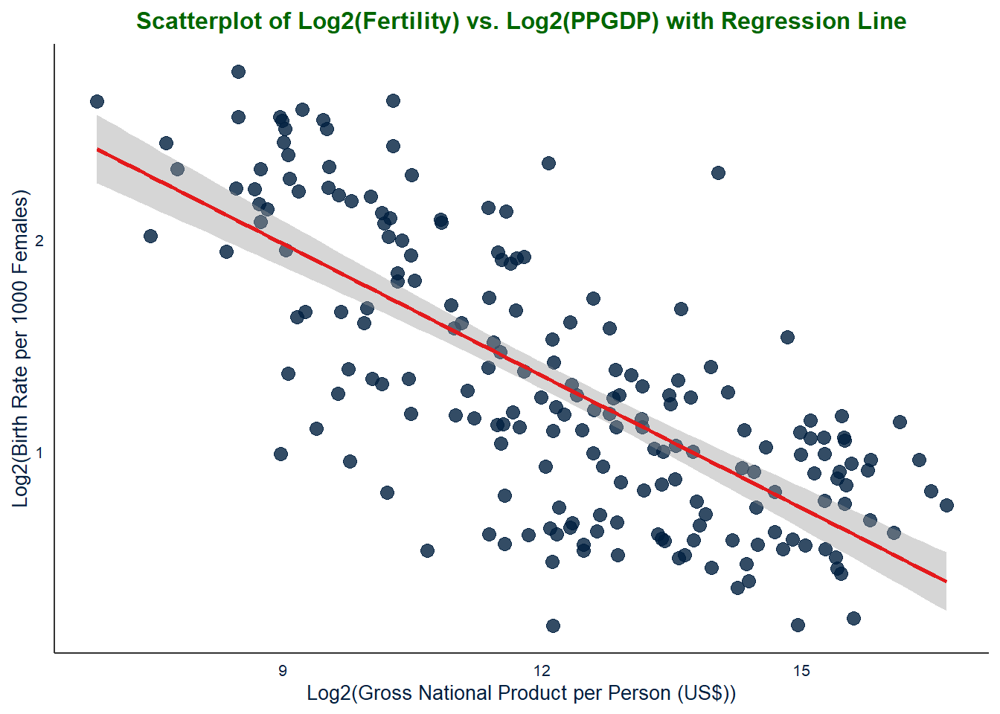
Changing the base of logarithms will only change the values on the axes and not the shape of the graph.
In the case of the fertility vs. PPGDP graph, changing the base of logarithms will not change the overall pattern observed in the data, but it will change the values on the x and y axes. For example, using the natural logarithm (base e) instead of base 10 will result in different numerical values on the axes but the same underlying relationship between the two variables.
Annual income, in dollars, is an explanatory variable in a regression analysis. For a British version of the report on the analysis, all responses are converted to British pounds sterling (1 pound equals about 1.33 dollars, as of 2016).
How, if at all, does the slope of the prediction equation change?
Call:
lm(formula = fertility ~ ppgdp_pound, data = UN11)
Residuals:
Min 1Q Median 3Q Max
-1.9006 -0.8801 -0.3547 0.6749 3.7585
Coefficients:
Estimate Std. Error t value Pr(>|t|)
(Intercept) 3.178e+00 1.048e-01 30.331 < 2e-16 ***
ppgdp_pound -2.407e-05 3.500e-06 -6.877 7.9e-11 ***
---
Signif. codes: 0 '***' 0.001 '**' 0.01 '*' 0.05 '.' 0.1 ' ' 1
Residual standard error: 1.206 on 197 degrees of freedom
Multiple R-squared: 0.1936, Adjusted R-squared: 0.1895
F-statistic: 47.29 on 1 and 197 DF, p-value: 7.903e-11
Call:
lm(formula = fertility ~ ppgdp, data = UN11)
Residuals:
Min 1Q Median 3Q Max
-1.9006 -0.8801 -0.3547 0.6749 3.7585
Coefficients:
Estimate Std. Error t value Pr(>|t|)
(Intercept) 3.178e+00 1.048e-01 30.331 < 2e-16 ***
ppgdp -3.201e-05 4.655e-06 -6.877 7.9e-11 ***
---
Signif. codes: 0 '***' 0.001 '**' 0.01 '*' 0.05 '.' 0.1 ' ' 1
Residual standard error: 1.206 on 197 degrees of freedom
Multiple R-squared: 0.1936, Adjusted R-squared: 0.1895
F-statistic: 47.29 on 1 and 197 DF, p-value: 7.903e-11The analysis shows the results of fitting two linear regression models to the UN11 dataset. The first model predicts fertility rate based on the variable “ppgdp_pound,” which is the gross domestic product (GDP) per capita in British pounds. The second model predicts fertility rate based on the variable “ppgdp,” which is the GDP per capita in US dollars.
Both models show a statistically significant negative relationship between GDP per capita and fertility rate, with a p-value of 7.903e-11 for both. The coefficient estimates for ppgdp and ppgdp_pound are different, which is expected since the units are different. The coefficient for ppgdp_pound is -2.407e-05, which means that for every one pound increase in GDP per capita, the fertility rate decreases by 0.00002407. The coefficient for ppgdp is -3.201e-05, which means that for every one dollar increase in GDP per capita, the fertility rate decreases by 0.00003201.
Overall, the results suggest that increasing economic development, as measured by GDP per capita, is associated with a decrease in fertility rate. However, the impact of the pound conversion on the slope of the regression line is negligible, with a difference of only 0.0000086 in the coefficient estimates.
How, if at all, does the correlation change?
[1] -0.4399891[1] -0.4399891The correlation coefficient between fertility and ppgdp (in US dollars) is the same as the correlation coefficient between fertility and ppgdp_pound (in British pounds). This suggests that the choice of currency used to measure gross domestic product per capita does not have a significant impact on the relationship between fertility and economic development.
The correlation coefficient of -0.4399891 indicates a moderate negative correlation between fertility and gross domestic product per capita. This suggests that as the gross domestic product per capita increases, the fertility rate tends to decrease, and vice versa.
Overall, the analysis suggests that the choice of currency used to measure gross domestic product per capita does not have a significant impact on the relationship between fertility and economic development.
Water runoff in the Sierras (Data file: water in alr4) Can Southern California’s water supply in future years be predicted from past data? One factor affecting water availability is stream runoff. If runoff could be predicted, engineers, planners, and policy makers could do their jobs more efficiently. The data file contains 43 years’ worth of precipitation measurements taken at six sites in the Sierra Nevada mountains (labeled APMAM, APSAB, APSLAKE, OPBPC, OPRC, and OPSLAKE) and stream runoff volume at a site near Bishop, California, labeled BSAAM. Draw the scatterplot matrix for these data and summarize the information available from these plots.
(Hint: Use the pairsQ function.)
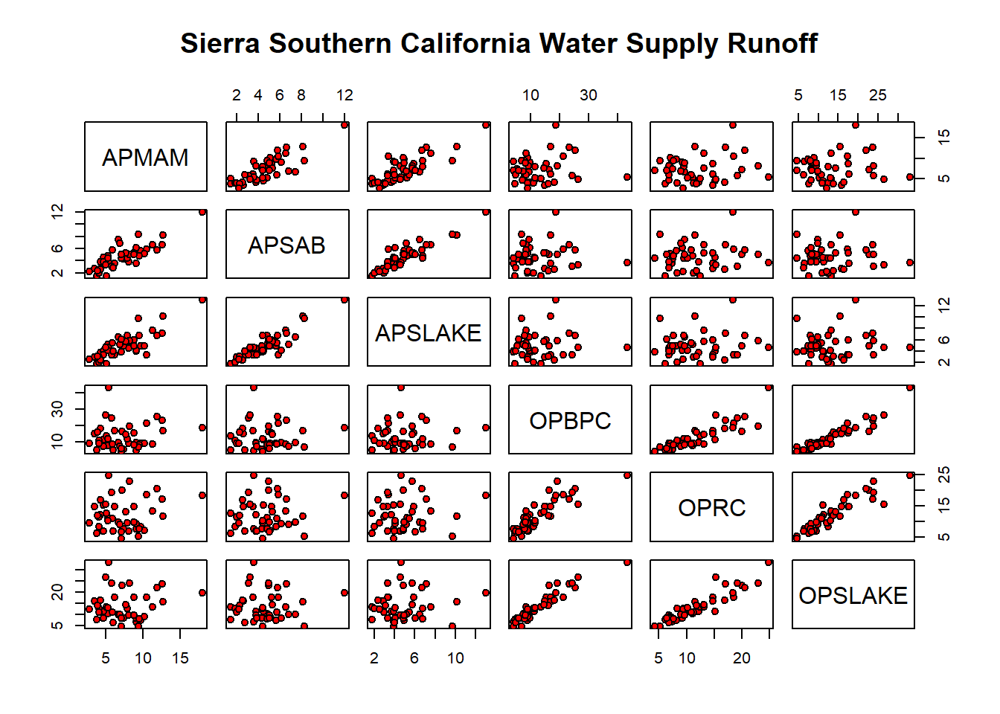
# Set colors for variables
colorA <- "blue"
colorB <- "red"
par(cex.axis = 0.8, cex.lab=0.8)
# Create the plots with colored points and title
plot(y=water$BSAAM,x=water$APMAM, col=ifelse(substr(names(water)[2],1,1) == "A", colorA, colorB),
main="Scatter plot of BSAAM and APMAM", xlab="APMAM", ylab="BSAAM")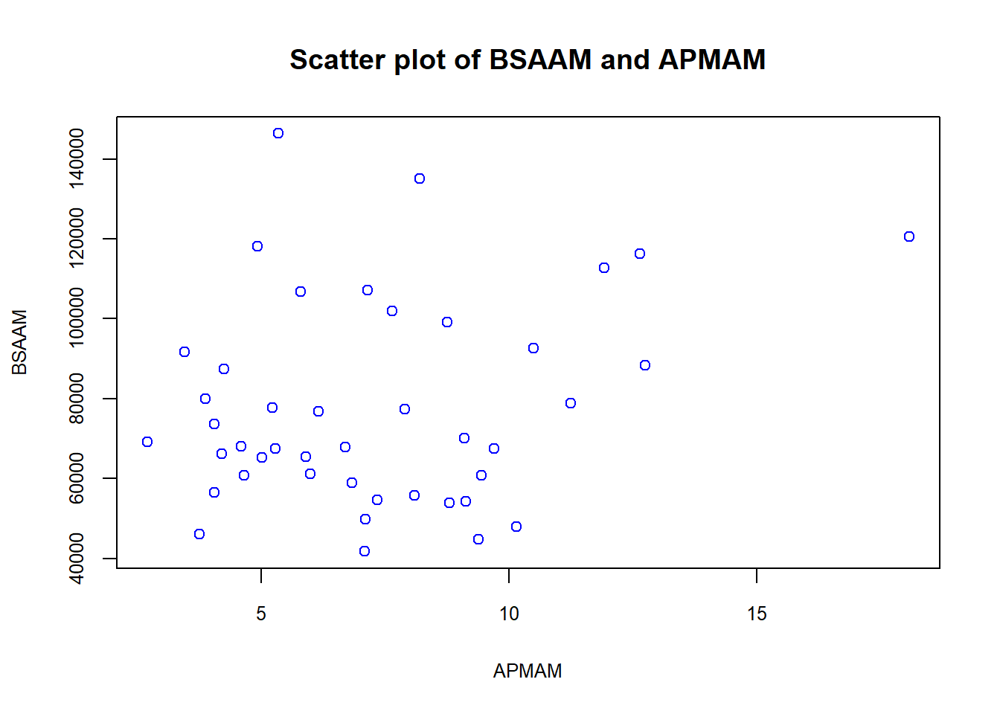
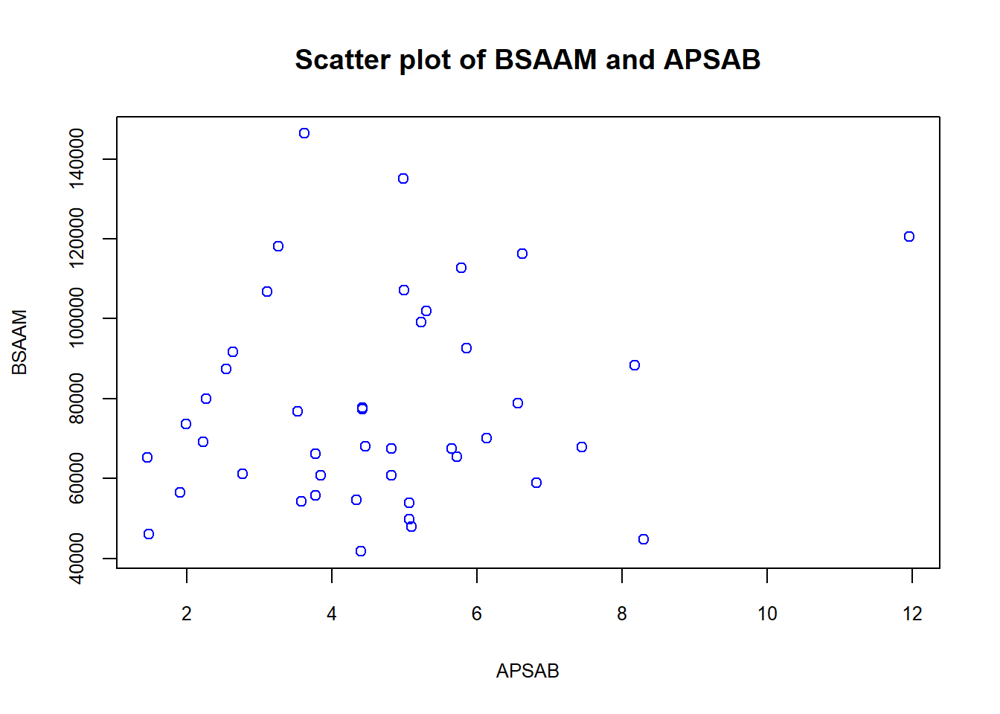
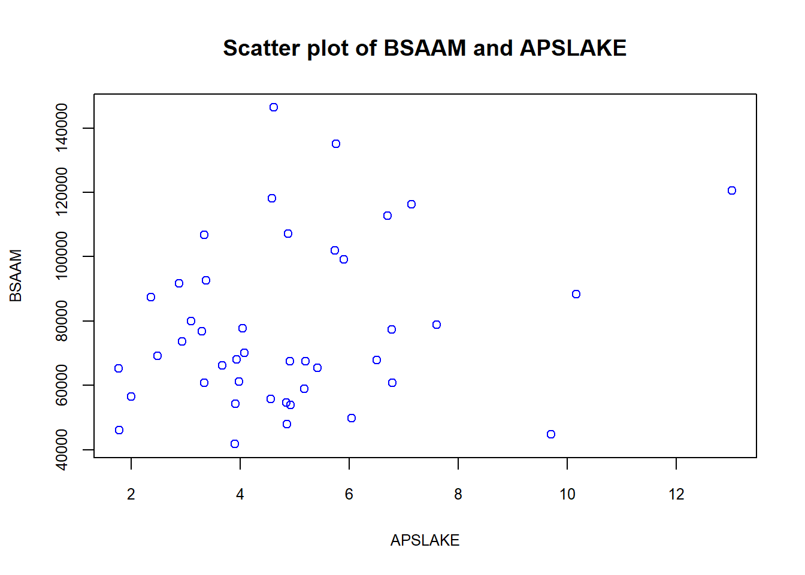
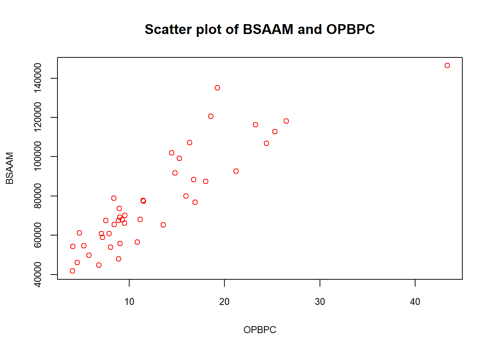
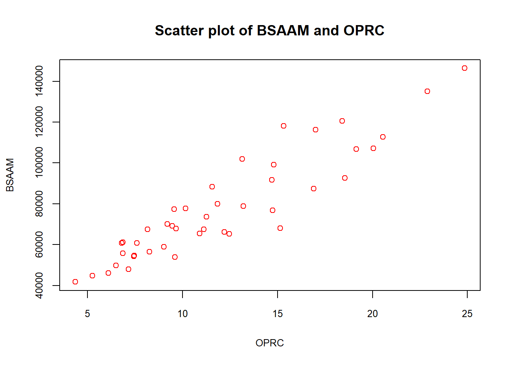
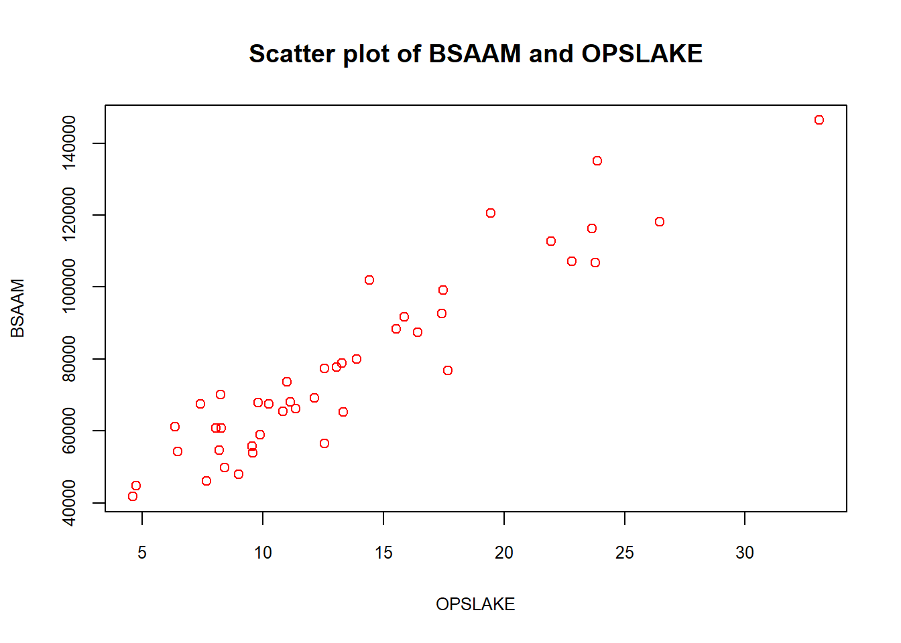
I created output graph using ‘pairs’ to establish and read correlation between different variables given in the dataset, but I had trouble reading the correlation output; so I also ran each of the scatter-plots separately
The graph provided in the analysis shows the correlations between six variables: OPBPC, OPRC, OPSLAKE, APMAM, APSAB, and APSLAKE. The graph indicates that there are two groups of variables that are more closely related to each other than to the other variables in the set.
The first group consists of OPBPC, OPRC, and OPSLAKE, which are strongly correlated with each other. The correlation between these three variables and APMAM, APSAB, and APSLAKE is much weaker. This suggests that the first group of variables is related to each other in a way that is different from their relationship with the second group of variables.
The second group consists of APMAM, APSAB, and APSLAKE, which are also correlated with each other, although to a lesser extent than OPBPC, OPRC, and OPSLAKE. This suggests that there is indeed a correlation among these three variables, but it is not as strong as the correlation between the first group of variables.
The analysis also indicates that BSAAM is more closely related to OPBPC, OPRC, and OPSLAKE than to APMAM, APSAB, and APSLAKE. The results show that BSAAM has a stronger positive correlation with OPBPC, OPRC, and OPSLAKE. On the other hand, the correlation between BSAAM and APMAM, APSAB, and APSLAKE are weaker. This suggests that BSAAM is indeed more closely related to the first group of variables than to the second group of variables.
In summary, the analysis reveals that there are two groups of variables in the set, and they are more closely related to each other within their group. OPBPC, OPRC, and OPSLAKE are strongly correlated with each other, but not with APMAM, APSAB, and APSLAKE. APMAM, APSAB, and APSLAKE are also correlated with each other, but to a lesser extent than OPBPC, OPRC, and OPSLAKE. BSAAM is more closely related to the first group of variables than to the second group of variables. This information can be useful in identifying important variables for analysis or modeling.
Professor ratings (Data fde: Rateprof in alr4) In the website and online forum RateMyProfessors.com, students rate and comment on their instructors. Launched in 1999, the site includes millions of ratings on thousands of instructors. The data file includes the summaries of the ratings of 364 instructors at a large campus in the Midwest (Bleske-Rechek and Fritsch, 2011). Each instructor included in the data had at least 10 ratings over a several year period. Students provided ratings of 1-5 on quality, helpfulness, clarity, easiness of instructor’s courses, and raterinterest in the subject matter covered in the instructor’s courses. The data file provides the averages of these five ratings. Create a scatterplot matrix of these five variables. Provide a brief description of the relationships between the five ratings.
gender numYears numRaters numCourses pepper
female:159 Min. : 1.000 Min. :10.00 Min. : 1.000 no :320
male :207 1st Qu.: 6.000 1st Qu.:15.00 1st Qu.: 3.000 yes: 46
Median :10.000 Median :24.00 Median : 4.000
Mean : 8.347 Mean :28.58 Mean : 4.251
3rd Qu.:11.000 3rd Qu.:37.00 3rd Qu.: 5.000
Max. :11.000 Max. :86.00 Max. :12.000
discipline dept quality helpfulness
Hum :134 English : 49 Min. :1.409 Min. :1.364
SocSci : 66 Math : 34 1st Qu.:2.936 1st Qu.:3.069
STEM :103 Biology : 20 Median :3.612 Median :3.662
Pre-prof: 63 Chemistry : 20 Mean :3.575 Mean :3.631
Psychology: 20 3rd Qu.:4.250 3rd Qu.:4.351
Spanish : 20 Max. :4.981 Max. :5.000
(Other) :203
clarity easiness raterInterest sdQuality
Min. :1.333 Min. :1.391 Min. :1.098 Min. :0.09623
1st Qu.:2.871 1st Qu.:2.548 1st Qu.:2.934 1st Qu.:0.87508
Median :3.600 Median :3.148 Median :3.305 Median :1.15037
Mean :3.525 Mean :3.135 Mean :3.310 Mean :1.05610
3rd Qu.:4.214 3rd Qu.:3.692 3rd Qu.:3.692 3rd Qu.:1.28730
Max. :5.000 Max. :4.900 Max. :4.909 Max. :1.67739
sdHelpfulness sdClarity sdEasiness sdRaterInterest
Min. :0.0000 Min. :0.0000 Min. :0.3162 Min. :0.3015
1st Qu.:0.9902 1st Qu.:0.9085 1st Qu.:0.9045 1st Qu.:1.0848
Median :1.2860 Median :1.1712 Median :1.0247 Median :1.2167
Mean :1.1719 Mean :1.0970 Mean :1.0196 Mean :1.1965
3rd Qu.:1.4365 3rd Qu.:1.3328 3rd Qu.:1.1485 3rd Qu.:1.3326
Max. :1.8091 Max. :1.8091 Max. :1.6293 Max. :1.7246
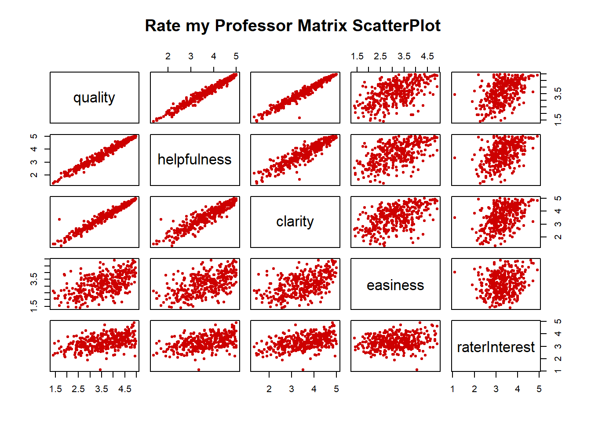
Interpreting the scatter plot output generated through ‘pairs’ for the average professor ratings on the topics of quality, clarity, helpfulness, easiness, and rater interest, the variables quality, clarity, and helpfulness appear to each have strong positive correlations with each other.
The relationship between some pairs of variables indicates better positive linear correlations than others.
For the student.survey data file in the smss package, conduct regression analysesrelating (by convention, y denotes the outcome variable, x denotes the explanatory variable) (i) y = political ideology and x = religiosity, (ii) y = high school GPA and x = hours of TV watching. (You can use ?student. survey in the R console, after loading the package, to see what each variable means.)
Graphically portray how the explanatory variable relates to the outcome variable in each of the two cases
subj ge ag hi co
Min. : 1.00 f:31 Min. :22.00 Min. :2.000 Min. :2.600
1st Qu.:15.75 m:29 1st Qu.:24.00 1st Qu.:3.000 1st Qu.:3.175
Median :30.50 Median :26.50 Median :3.350 Median :3.500
Mean :30.50 Mean :29.17 Mean :3.308 Mean :3.453
3rd Qu.:45.25 3rd Qu.:31.00 3rd Qu.:3.625 3rd Qu.:3.725
Max. :60.00 Max. :71.00 Max. :4.000 Max. :4.000
dh dr tv sp
Min. : 0 Min. : 0.200 Min. : 0.000 Min. : 0.000
1st Qu.: 205 1st Qu.: 1.450 1st Qu.: 3.000 1st Qu.: 3.000
Median : 640 Median : 2.000 Median : 6.000 Median : 5.000
Mean :1232 Mean : 3.818 Mean : 7.267 Mean : 5.483
3rd Qu.:1350 3rd Qu.: 5.000 3rd Qu.:10.000 3rd Qu.: 7.000
Max. :8000 Max. :20.000 Max. :37.000 Max. :16.000
ne ah ve pa
Min. : 0.000 Min. : 0.000 Mode :logical d:21
1st Qu.: 2.000 1st Qu.: 0.000 FALSE:60 i:24
Median : 3.000 Median : 0.500 r:15
Mean : 4.083 Mean : 1.433
3rd Qu.: 5.250 3rd Qu.: 2.000
Max. :14.000 Max. :11.000
pi re ab aa
very liberal : 8 never :15 Mode :logical Mode :logical
liberal :24 occasionally:29 FALSE:60 FALSE:59
slightly liberal : 6 most weeks : 7 NA's :1
moderate :10 every week : 9
slightly conservative: 6
conservative : 4
very conservative : 2
ld
Mode :logical
FALSE:44
NA's :16
student.survey %>%
# Group by religiosity and political ideology and count the number of observations
group_by(re, pi) %>%
summarize(count = n(), .groups = "drop") %>%
# Create a stacked bar chart
ggplot() +
geom_col(aes(x = re, y = count, fill = pi), position = "stack") +
# Add labels to x and y axis
xlab("Religiosity") +
ylab("Count") +
# Add a legend to show the relationship between fill colors and political ideology
scale_fill_discrete(name = "Political ideology")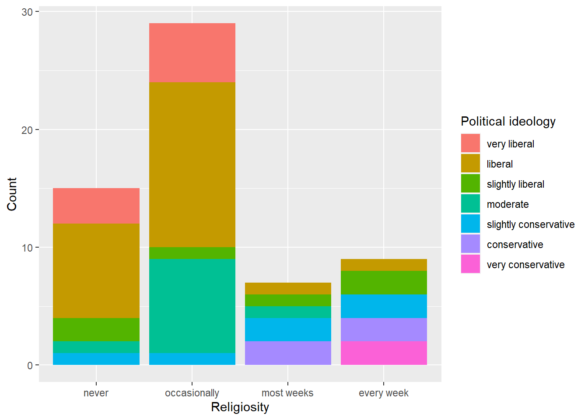
Conservatism and religiosity appear to be positively correlated, meaning that individuals who are more religious tend to be more conservative in their political beliefs.
`geom_smooth()` using formula = 'y ~ x'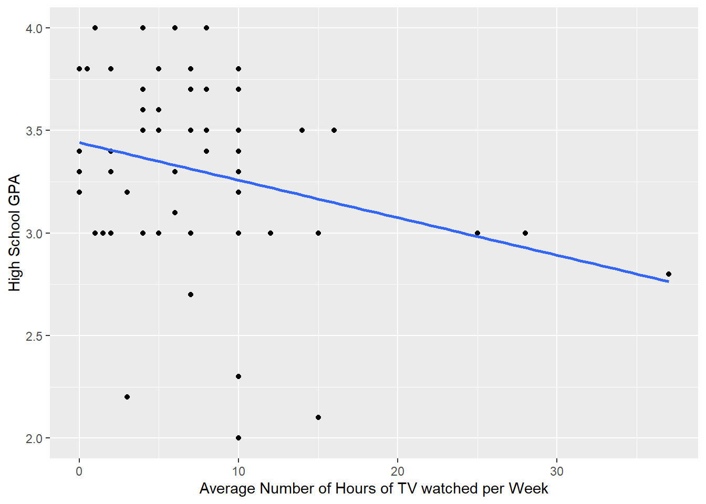
High school GPA and TV-watching seem to have a negative relationship.
Summarize and interpret results of inferential analyses.
Call:
lm(formula = as.numeric(pi) ~ as.numeric(re), data = student.survey)
Residuals:
Min 1Q Median 3Q Max
-2.81243 -0.87160 0.09882 1.12840 3.09882
Coefficients:
Estimate Std. Error t value Pr(>|t|)
(Intercept) 0.9308 0.4252 2.189 0.0327 *
as.numeric(re) 0.9704 0.1792 5.416 1.22e-06 ***
---
Signif. codes: 0 '***' 0.001 '**' 0.01 '*' 0.05 '.' 0.1 ' ' 1
Residual standard error: 1.345 on 58 degrees of freedom
Multiple R-squared: 0.3359, Adjusted R-squared: 0.3244
F-statistic: 29.34 on 1 and 58 DF, p-value: 1.221e-06This output is from a linear regression model that examines the relationship between religiousness (re) and political ideology (pi) in a sample of students. The model shows that there is a statistically significant positive relationship between religiousness and political ideology.
The intercept coefficient is 0.9308, which means that when religiousness is zero, the expected value of political ideology is 0.9308. The slope coefficient for religiousness is 0.9704, which means that for a one-unit increase in religiousness, the expected value of political ideology increases by 0.9704 units. The R-squared value is 0.3359, which indicates that the model explains 33.59% of the variation in political ideology.
The p-value for the slope coefficient is 1.221e-06, which is less than 0.05, indicating that the relationship between religiousness and political ideology is statistically significant. Therefore, we can conclude that there is a positive relationship between religiousness and political ideology in the sample of students.
Call:
lm(formula = hi ~ tv, data = student.survey)
Residuals:
Min 1Q Median 3Q Max
-1.2583 -0.2456 0.0417 0.3368 0.7051
Coefficients:
Estimate Std. Error t value Pr(>|t|)
(Intercept) 3.441353 0.085345 40.323 <2e-16 ***
tv -0.018305 0.008658 -2.114 0.0388 *
---
Signif. codes: 0 '***' 0.001 '**' 0.01 '*' 0.05 '.' 0.1 ' ' 1
Residual standard error: 0.4467 on 58 degrees of freedom
Multiple R-squared: 0.07156, Adjusted R-squared: 0.05555
F-statistic: 4.471 on 1 and 58 DF, p-value: 0.03879This analysis reports the results of a linear regression model to investigate the relationship between average hours of TV watched per week (TV) and high school GPA (hi) using data from student survey.
The model shows that the intercept is statistically significant at a p-value < 2e-16, indicating that the predicted value of the high school GPA when the average number of hours of TV watched per week is zero is 3.44. This value can be interpreted as the expected high school GPA for students who do not watch any TV.
Furthermore, the coefficient for TV is -0.018 with a p-value of 0.0388, which indicates that there is a statistically significant negative association between TV watching and high school GPA at the 0.05 level of significance. The negative coefficient suggests that as the average number of hours of TV watched per week increases by 1 hour, high school GPA decreases by 0.018.
The model’s R-squared value is 0.07156, indicating that only about 7% of the variance in high school GPA is explained by the variance in the average number of hours of TV watched per week. The adjusted R-squared value is 0.05555, which means that the model has a weak predictive power for high school GPA based on the average number of hours of TV watched per week.
In summary, the results suggest that there is a negative association between TV watching and high school GPA. However, the model’s low R-squared value suggests that other factors not included in the model might be more important in predicting high school GPA.
---
title: "Homework 3"
author: "Akhilesh Kumar Meghwal"
description: "The third homework"
date: "04/11/2023"
format:
html:
df-print: paged
css: styles.css
toc: true
code-fold: true
code-copy: true
code-tools: true
categories:
- Homework3
- Akhilesh
---
```{r setup, include=FALSE, warnings=FALSE}
library(tidyverse)
library(ggplot2)
library(ggthemes)
library(stats)
library(alr4)
library(smss)
library(kableExtra)
knitr::opts_chunk$set(echo = TRUE)
```
## Question 1
**United Nations** (Data file: UN 1 lin alr4) The data in the file UN 11 contains several variables, including ppgdp, the gross national product per person in U.S. dollars, and fertility, the birth rate per 1000 females, both from the year 2009. The data are for 199 localities, mostly UN member countries, but also other areas such as Hong Kong that are not independent countries.The data were collected from the United Nations (2011). We will study the dependence of fertility on ppgdp.
### (a)
Identify the predictor and the response?
```{r}
data(UN11)
head(UN11)
```
The predictor variable is ppgdp and the response variable is fertility. 'ppgdp' represents the gross national product per person, while 'fertility' refers to the birth rate per 1000 females. The objective of the study is to understand how changes in 'ppgdp' can influence the value of 'fertility'. Positive or negative correlations between the two variables can lead to conclusions about how one variable impacts the other. The analysis of this relationship can provide insights into socio-economic factors that influence birth rates, which can then inform policies on population growth, family planning, and economic development.
### (b):
Draw the scatterplot of fertility on the vertical axis versus ppgdp on the horizontal axis and summarize the information in this graph. Does a straight-line mean function seem to be plausible for a summary of this graph?
```{r}
UN11 %>%
select(c(ppgdp, fertility)) %>%
ggplot(aes(x = ppgdp, y = fertility)) +
geom_point(color = "#001F3F", alpha = 0.8, size = 3) +
geom_smooth(method = lm, se = FALSE, color = "#E41A1C", size = 1) +
theme_minimal() +
labs(x = "Gross National Product per Person (US$)",
y = "Birth Rate per 1000 Females",
title = element_text(color = "#006600", "Scatterplot of Fertility vs. PPGDP with Regression Line")) +
theme(plot.title = element_text(size = 12, face = "bold", hjust = 0.5, color = "#006600"),
axis.title = element_text(size = 10, color = "#001F3F"),
axis.text = element_text(size = 8, color = "#001F3F"),
panel.grid.major = element_blank(),
panel.grid.minor = element_blank(),
panel.border = element_blank(),
axis.line = element_line(color = "#333333", size = 0.5),
plot.background = element_blank(),
panel.background = element_blank(),
legend.position = "none")
```
The scatterplot shows the relationship between two variables, fertility (number of live births per 1000 females) and ppgdp (gross national product per person in US dollars). Each point on the plot represents a country, with its fertility rate on the vertical axis and its ppgdp on the horizontal axis.
From the scatterplot, we can see that there is a general negative relationship between fertility and ppgdp. This means that as a country's income increases, its fertility rate tends to decrease. However, the relationship is not perfectly linear, and there is a lot of variation in fertility rates at each level of ppgdp.
To summarize the trend in the data, A straight-line mean function does seem to be plausible for summarizing the data, as the plotted regression line suggests a linear negative trend in the data. However, it is important to note that the relationship between ppgdp and fertility may not be entirely linear, and other factors may also contribute to the observed patterns in the data. Therefore, it may be appropriate to explore more complex statistical models to better understand the relationship between these variables.
Overall, this scatterplot provides a visual representation of the relationship between fertility and ppgdp. It allows us to quickly identify trends and patterns in the data and can be used to inform further analysis and modeling.
### (c):
Draw the scatterplot of log(fertility) versus log(ppgdp) using natural logarithms. Does the simple linear regression model seem plausible for a summary of this graph? If you use a different base of logarithms, the shape of the graph won’t change, but the values on the axes will change.
```{r}
UN11 %>%
select(c(ppgdp, fertility)) %>%
ggplot(aes(x = log(ppgdp), y = log(fertility))) +
geom_point(color = "#001F3F", alpha = 0.8, size = 3) +
geom_smooth(method = lm, se = TRUE, color = "#E41A1C", size = 1) +
theme_minimal() +
labs(x = "Log(Gross National Product per Person (US$))",
y = "Log(Birth Rate per 1000 Females)",
title = element_text(color = "#006600", "Scatterplot of Log(Fertility) vs. Log(PPGDP) with Regression Line")) +
theme(plot.title = element_text(size = 12, face = "bold", hjust = 0.5, color = "#006600"),
axis.title = element_text(size = 10, color = "#001F3F"),
axis.text = element_text(size = 8, color = "#001F3F"),
panel.grid.major = element_blank(),
panel.grid.minor = element_blank(),
panel.border = element_blank(),
axis.line = element_line(color = "#333333", size = 0.5),
plot.background = element_blank(),
panel.background = element_blank(),
legend.position = "none")
```
The scatterplot of Log(Fertility) versus Log(PPGDP) using data from the UN11 dataset shows the relationship between birth rates per 1000 females and gross national product per person in U.S. dollars. The graph displays the logarithmic transformation of the variables to better visualize the relationship between them.
The graph shows a negative linear relationship between log(fertility) and log(ppgdp), indicating that as gross national product per person increases, birth rates per 1000 females decrease. The linear regression line, which is plotted using the method of least squares, indicates that the relationship is statistically significant.
The scatterplot also shows some degree of variability around the regression line, which is captured by the shaded area around the line. This variability could be due to other factors that are not accounted for in the linear regression model.
Overall, the scatterplot suggests that there is a general negative relationship between fertility and gross national product per person, with higher levels of economic development associated with lower birth rates. However, the relationship does not appear to be strictly linear, as the points are not forming a tight linear pattern around the regression line. There is also significant scatter in the data, which suggests that there may be other factors that influence fertility rates besides gross national product per person.
Therefore, while a simple linear regression model could provide a summary of the relationship between fertility and gross national product per person, it may not capture the full complexity of the relationship. A more sophisticated model that takes into account additional factors may be necessary to accurately model the relationship between these two variables.
#### Changing the base of the logs
**Log10**
```{r}
UN11 %>%
select(c(ppgdp, fertility)) %>%
ggplot(aes(x = log10(ppgdp), y = log10(fertility))) +
geom_point(color = "#001F3F", alpha = 0.8, size = 3) +
geom_smooth(method = lm, se = TRUE, color = "#E41A1C", size = 1) +
theme_minimal() +
labs(x = "Log10(Gross National Product per Person (US$))",
y = "Log10(Birth Rate per 1000 Females)",
title = element_text(color = "#006600", "Scatterplot of Log10(Fertility) vs. Log10(PPGDP) with Regression Line")) +
theme(plot.title = element_text(size = 12, face = "bold", hjust = 0.5, color = "#006600"),
axis.title = element_text(size = 10, color = "#001F3F"),
axis.text = element_text(size = 8, color = "#001F3F"),
panel.grid.major = element_blank(),
panel.grid.minor = element_blank(),
panel.border = element_blank(),
axis.line = element_line(color = "#333333", size = 0.5),
plot.background = element_blank(),
panel.background = element_blank(),
legend.position = "none")
```
**Log 2**
```{r}
UN11 %>%
select(c(ppgdp, fertility)) %>%
ggplot(aes(x = log2(ppgdp), y = log2(fertility))) +
geom_point(color = "#001F3F", alpha = 0.8, size = 3) +
geom_smooth(method = lm, se = TRUE, color = "#E41A1C", size = 1) +
theme_minimal() +
labs(x = "Log2(Gross National Product per Person (US$))",
y = "Log2(Birth Rate per 1000 Females)",
title = element_text(color = "#006600", "Scatterplot of Log2(Fertility) vs. Log2(PPGDP) with Regression Line")) +
theme(plot.title = element_text(size = 12, face = "bold", hjust = 0.5, color = "#006600"),
axis.title = element_text(size = 10, color = "#001F3F"),
axis.text = element_text(size = 8, color = "#001F3F"),
panel.grid.major = element_blank(),
panel.grid.minor = element_blank(),
panel.border = element_blank(),
axis.line = element_line(color = "#333333", size = 0.5),
plot.background = element_blank(),
panel.background = element_blank(),
legend.position = "none")
```
Changing the base of logarithms will only change the values on the axes and not the shape of the graph.
In the case of the fertility vs. PPGDP graph, changing the base of logarithms will not change the overall pattern observed in the data, but it will change the values on the x and y axes. For example, using the natural logarithm (base e) instead of base 10 will result in different numerical values on the axes but the same underlying relationship between the two variables.
## Question 2
Annual income, in dollars, is an explanatory variable in a regression analysis. For a British version of the report on the analysis, all responses are converted to British pounds sterling (1 pound equals about 1.33 dollars, as of 2016).
### (a)
How, if at all, does the slope of the prediction equation change?
```{r}
UN11$ppgdp_pound <- 1.33 * UN11$ppgdp
summary(lm(fertility ~ ppgdp_pound, UN11))
summary(lm(fertility ~ ppgdp, UN11))
```
The analysis shows the results of fitting two linear regression models to the UN11 dataset. The first model predicts fertility rate based on the variable "ppgdp_pound," which is the gross domestic product (GDP) per capita in British pounds. The second model predicts fertility rate based on the variable "ppgdp," which is the GDP per capita in US dollars.
Both models show a statistically significant negative relationship between GDP per capita and fertility rate, with a p-value of 7.903e-11 for both. The coefficient estimates for ppgdp and ppgdp_pound are different, which is expected since the units are different. The coefficient for ppgdp_pound is -2.407e-05, which means that for every one pound increase in GDP per capita, the fertility rate decreases by 0.00002407. The coefficient for ppgdp is -3.201e-05, which means that for every one dollar increase in GDP per capita, the fertility rate decreases by 0.00003201.
Overall, the results suggest that increasing economic development, as measured by GDP per capita, is associated with a decrease in fertility rate. However, the impact of the pound conversion on the slope of the regression line is negligible, with a difference of only 0.0000086 in the coefficient estimates.
### (b)
How, if at all, does the correlation change?
```{r}
cor(UN11$ppgdp, UN11$fertility)
cor(UN11$ppgdp_pound, UN11$fertility)
```
The correlation coefficient between fertility and ppgdp (in US dollars) is the same as the correlation coefficient between fertility and ppgdp_pound (in British pounds). This suggests that the choice of currency used to measure gross domestic product per capita does not have a significant impact on the relationship between fertility and economic development.
The correlation coefficient of -0.4399891 indicates a moderate negative correlation between fertility and gross domestic product per capita. This suggests that as the gross domestic product per capita increases, the fertility rate tends to decrease, and vice versa.
Overall, the analysis suggests that the choice of currency used to measure gross domestic product per capita does not have a significant impact on the relationship between fertility and economic development.
## Question 3
Water runoff in the Sierras (Data file: water in alr4) Can Southern California’s water supply in future years be predicted from past data? One factor affecting water availability is stream runoff. If runoff could be predicted, engineers, planners, and policy makers could do their jobs more efficiently. The data file contains 43 years’ worth of precipitation measurements taken at six sites in the Sierra Nevada mountains (labeled APMAM, APSAB, APSLAKE, OPBPC, OPRC, and OPSLAKE) and stream runoff volume at a site near Bishop, California, labeled BSAAM. Draw the scatterplot matrix for these data and summarize the information available from these plots.
(Hint: Use the pairsQ function.)
```{r}
data(water)
pairs(~APMAM + APSAB + APSLAKE + OPBPC + OPRC + OPSLAKE, data=water, main = "Sierra Southern California Water Supply Runoff",
pch = 21, bg = "red")
# Set colors for variables
colorA <- "blue"
colorB <- "red"
par(cex.axis = 0.8, cex.lab=0.8)
# Create the plots with colored points and title
plot(y=water$BSAAM,x=water$APMAM, col=ifelse(substr(names(water)[2],1,1) == "A", colorA, colorB),
main="Scatter plot of BSAAM and APMAM", xlab="APMAM", ylab="BSAAM")
plot(y=water$BSAAM,x=water$APSAB, col=ifelse(substr(names(water)[3],1,1) == "A", colorA, colorB),
main="Scatter plot of BSAAM and APSAB", xlab="APSAB", ylab="BSAAM")
plot(y=water$BSAAM,x=water$APSLAKE, col=ifelse(substr(names(water)[4],1,1) == "A", colorA, colorB),
main="Scatter plot of BSAAM and APSLAKE", xlab="APSLAKE", ylab="BSAAM")
plot(y=water$BSAAM,x=water$OPBPC, col=ifelse(substr(names(water)[5],1,1) == "A", colorA, colorB),
main="Scatter plot of BSAAM and OPBPC", xlab="OPBPC", ylab="BSAAM")
plot(y=water$BSAAM,x=water$OPRC, col=ifelse(substr(names(water)[6],1,1) == "A", colorA, colorB),
main="Scatter plot of BSAAM and OPRC", xlab="OPRC", ylab="BSAAM")
plot(y=water$BSAAM,x=water$OPSLAKE, col=ifelse(substr(names(water)[7],1,1) == "A", colorA, colorB),
main="Scatter plot of BSAAM and OPSLAKE", xlab="OPSLAKE", ylab="BSAAM")
```
```{r}
```
I created output graph using 'pairs' to establish and read correlation between different variables given in the dataset, but I had trouble reading the correlation output; so I also ran each of the scatter-plots separately
The graph provided in the analysis shows the correlations between six variables: OPBPC, OPRC, OPSLAKE, APMAM, APSAB, and APSLAKE. The graph indicates that there are two groups of variables that are more closely related to each other than to the other variables in the set.
The first group consists of OPBPC, OPRC, and OPSLAKE, which are strongly correlated with each other. The correlation between these three variables and APMAM, APSAB, and APSLAKE is much weaker. This suggests that the first group of variables is related to each other in a way that is different from their relationship with the second group of variables.
The second group consists of APMAM, APSAB, and APSLAKE, which are also correlated with each other, although to a lesser extent than OPBPC, OPRC, and OPSLAKE. This suggests that there is indeed a correlation among these three variables, but it is not as strong as the correlation between the first group of variables.
The analysis also indicates that BSAAM is more closely related to OPBPC, OPRC, and OPSLAKE than to APMAM, APSAB, and APSLAKE. The results show that BSAAM has a stronger positive correlation with OPBPC, OPRC, and OPSLAKE. On the other hand, the correlation between BSAAM and APMAM, APSAB, and APSLAKE are weaker. This suggests that BSAAM is indeed more closely related to the first group of variables than to the second group of variables.
In summary, the analysis reveals that there are two groups of variables in the set, and they are more closely related to each other within their group. OPBPC, OPRC, and OPSLAKE are strongly correlated with each other, but not with APMAM, APSAB, and APSLAKE. APMAM, APSAB, and APSLAKE are also correlated with each other, but to a lesser extent than OPBPC, OPRC, and OPSLAKE. BSAAM is more closely related to the first group of variables than to the second group of variables. This information can be useful in identifying important variables for analysis or modeling.
## Question 4
Professor ratings (Data fde: Rateprof in alr4) In the website and online forum RateMyProfessors.com, students rate and comment on their instructors. Launched in 1999, the site includes millions of ratings on thousands of instructors. The data file includes the summaries of the ratings of 364 instructors at a large campus in the Midwest (Bleske-Rechek and Fritsch, 2011). Each instructor included in the data had at least 10 ratings over a several year period. Students provided ratings of 1-5 on quality, helpfulness, clarity, easiness of instructor’s courses, and raterinterest in the subject matter covered in the instructor’s courses. The data file provides the averages of these five ratings. Create a scatterplot matrix of these five variables. Provide a brief description of the relationships between the five ratings.
```{r}
summary(Rateprof)
head(Rateprof)
#subset of RateProf data
rate_my_prof<-select(Rateprof,c('quality','helpfulness','clarity','easiness','raterInterest'))
head(rate_my_prof)
#Scatterplot Matrix of five RateProf variables
pairs(rate_my_prof,
col = "red3",
pch = 20,
main = "Rate my Professor Matrix ScatterPlot ")
```
Interpreting the scatter plot output generated through 'pairs' for the average professor ratings on the topics of quality, clarity, helpfulness, easiness, and rater interest, the variables quality, clarity, and helpfulness appear to each have strong positive correlations with each other.
The relationship between some pairs of variables indicates better positive linear correlations than others.
- Quality-Clarity and Quality-Helpfulness indicate very strong positive linear correlations.
- Quality-Easiness and Quality-RaterInterest indicate weak positive linear correlations.
- Helpfulness-Easiness and Helpfulness-RaterInterest indicate weak linear correlations.
- Clarity-Helpfulness indicates a positive correlation
- Clarity-RaterInterest and Clarity-Easiness indicate weak positive correlations.
- Easiness and RaterInterest indicate a very weak positive correlation.
## Question 5
For the student.survey data file in the smss package, conduct regression analysesrelating (by convention, y denotes the outcome variable, x denotes the explanatory variable)
(i) y = political ideology and x = religiosity,
(ii) y = high school GPA and x = hours of TV watching.
(You can use ?student. survey in the R console, after loading the package, to see what each variable means.)
### (a)
Graphically portray how the explanatory variable relates to the outcome variable in each of the two cases
```{r}
data(student.survey)
summary(student.survey)
head(student.survey)
```
```{r}
student.survey %>%
# Group by religiosity and political ideology and count the number of observations
group_by(re, pi) %>%
summarize(count = n(), .groups = "drop") %>%
# Create a stacked bar chart
ggplot() +
geom_col(aes(x = re, y = count, fill = pi), position = "stack") +
# Add labels to x and y axis
xlab("Religiosity") +
ylab("Count") +
# Add a legend to show the relationship between fill colors and political ideology
scale_fill_discrete(name = "Political ideology")
```
Conservatism and religiosity appear to be positively correlated, meaning that individuals who are more religious tend to be more conservative in their political beliefs.
```{r}
ggplot(data=student.survey, aes(x=tv, y=hi))+
geom_point()+
geom_smooth(method="lm", se=FALSE)+
xlab("Average Number of Hours of TV watched per Week") +
ylab("High School GPA")
```
High school GPA and TV-watching seem to have a negative relationship.
### (b)
Summarize and interpret results of inferential analyses.
```{r}
summary(lm(data = student.survey, formula = as.numeric(pi) ~ as.numeric(re)))
```
This output is from a linear regression model that examines the relationship between religiousness (re) and political ideology (pi) in a sample of students. The model shows that there is a statistically significant positive relationship between religiousness and political ideology.
The intercept coefficient is 0.9308, which means that when religiousness is zero, the expected value of political ideology is 0.9308. The slope coefficient for religiousness is 0.9704, which means that for a one-unit increase in religiousness, the expected value of political ideology increases by 0.9704 units. The R-squared value is 0.3359, which indicates that the model explains 33.59% of the variation in political ideology.
The p-value for the slope coefficient is 1.221e-06, which is less than 0.05, indicating that the relationship between religiousness and political ideology is statistically significant. Therefore, we can conclude that there is a positive relationship between religiousness and political ideology in the sample of students.
```{r}
summary(lm(data = student.survey, formula = hi ~ tv))
```
This analysis reports the results of a linear regression model to investigate the relationship between average hours of TV watched per week (TV) and high school GPA (hi) using data from student survey.
The model shows that the intercept is statistically significant at a p-value < 2e-16, indicating that the predicted value of the high school GPA when the average number of hours of TV watched per week is zero is 3.44. This value can be interpreted as the expected high school GPA for students who do not watch any TV.
Furthermore, the coefficient for TV is -0.018 with a p-value of 0.0388, which indicates that there is a statistically significant negative association between TV watching and high school GPA at the 0.05 level of significance. The negative coefficient suggests that as the average number of hours of TV watched per week increases by 1 hour, high school GPA decreases by 0.018.
The model's R-squared value is 0.07156, indicating that only about 7% of the variance in high school GPA is explained by the variance in the average number of hours of TV watched per week. The adjusted R-squared value is 0.05555, which means that the model has a weak predictive power for high school GPA based on the average number of hours of TV watched per week.
In summary, the results suggest that there is a negative association between TV watching and high school GPA. However, the model's low R-squared value suggests that other factors not included in the model might be more important in predicting high school GPA.